Pantry调味与干货
Cornstarch玉米淀粉
At Costco在 Costco
Typical pack常见规格: Fleischmann's corn starch, 1 kgFleischmann's 玉米淀粉，1 公斤
Price seen价格: C$8.99–8.99 (2026-11-16, costco.ca online listings; warehouse prices differcostco.ca 线上目录价，仓库价不同; varies随时变化)
Sample date取样日期 2026-11-16. Availability varies by warehouse and season; this is not a stock guarantee.有无因门店和季节而异，不是库存保证。
Store and portion储存与分装
Store in a cool, dark place; refrigerate opened sauces as the label says; keep oils sealed and away from light.常温避光放；开封后的酱料冷藏（看瓶身标示）；油类避光密封。
Decant a small bottle for daily use and keep the rest sealed.大瓶买回后倒出小瓶常用，其余收好，减少开封次数。
Per 100 g (Canadian Nutrient File)每 100 克（加拿大营养素数据库）
Grains, cornstarch · code 4419
381 kcal · protein蛋白 0.26 g · fat脂肪 0.05 g · carbs碳水 91.27 g · fibre纤维 0.9 g · sodium钠 9 mg
No priority allergen.无重点过敏原。
Recipes with this用到它的菜
 Beef Chow Fun干炒牛河23 min分钟 · 2 servings份 · Cantonese粤
Beef Chow Fun干炒牛河23 min分钟 · 2 servings份 · Cantonese粤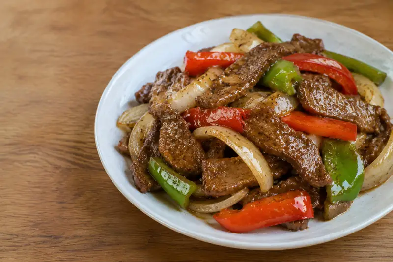
Black Pepper Beef Stir-fry黑椒牛柳43 min分钟 · 2 servings份 · Cantonese粤Braised Tofu with Mushrooms香菇烧豆腐25 min分钟 · 2 servings份 · Chinese home-style家常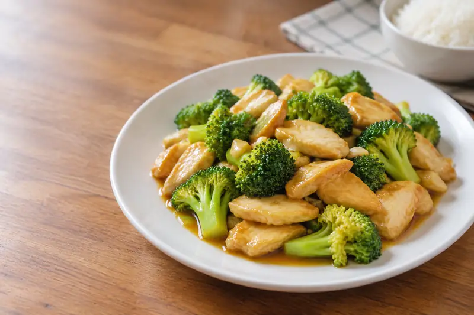
Chicken and Broccoli Stir-fry鸡胸肉炒西兰花27 min分钟 · 2 servings份 · Chinese home-style家常Chicken Congee鸡肉粥63 min分钟 · 3 servings份 · Cantonese粤 Century Egg and Pork Congee皮蛋瘦肉粥80 min分钟 · 4 servings份 · Cantonese粤
Century Egg and Pork Congee皮蛋瘦肉粥80 min分钟 · 4 servings份 · Cantonese粤 Sweet Corn Egg Drop Soup粟米蛋花汤25 min分钟 · 4 servings份 · Cantonese粤Cumin Beef孜然牛肉25 min分钟 · 2 servings份 · Northwestern / Xinjiang西北/新疆
Sweet Corn Egg Drop Soup粟米蛋花汤25 min分钟 · 4 servings份 · Cantonese粤Cumin Beef孜然牛肉25 min分钟 · 2 servings份 · Northwestern / Xinjiang西北/新疆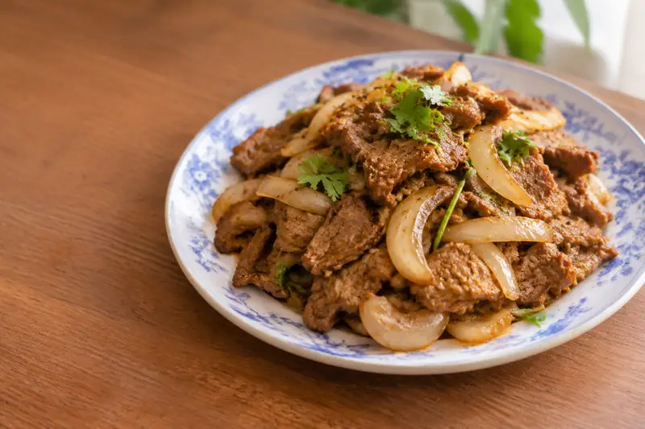
Cumin Lamb Stir-fry孜然羊肉23 min分钟 · 2 servings份 · Chinese home-style家常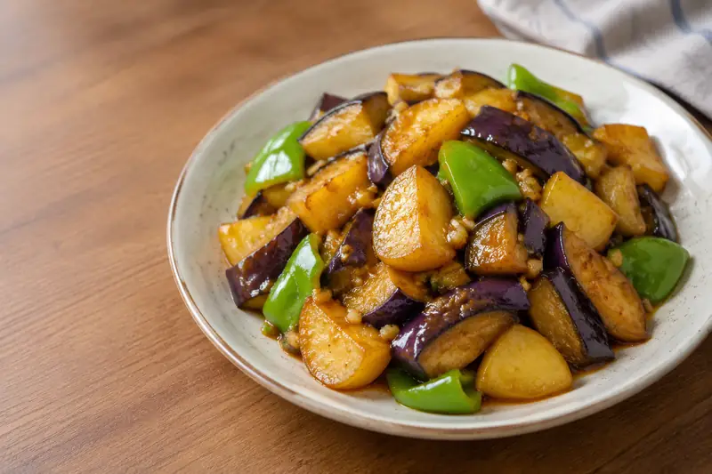
Di San Xian (Potato, Eggplant and Pepper)地三鲜35 min分钟 · 3 servings份 · Northeastern Chinese东北Tomato Egg Drop Soup番茄蛋花汤17 min分钟 · 2 servings份 · Chinese home-style家常Fish Tacos炸鱼塔可40 min分钟 · 4 servings份 · Western西式 Tomato Fish Soup番茄鱼片汤30 min分钟 · 4 servings份 · Chinese home-style家常Gai Lan in Oyster Sauce蚝油芥兰18 min分钟 · 3 servings份 · Cantonese粤
Tomato Fish Soup番茄鱼片汤30 min分钟 · 4 servings份 · Chinese home-style家常Gai Lan in Oyster Sauce蚝油芥兰18 min分钟 · 3 servings份 · Cantonese粤 Ginger Scallion Crab姜葱炒蟹28 min分钟 · 2 servings份 · Cantonese粤
Ginger Scallion Crab姜葱炒蟹28 min分钟 · 2 servings份 · Cantonese粤 Guobaorou Sweet and Sour Crispy Pork锅包肉55 min分钟 · 3 servings份 · Northeastern Chinese东北
Guobaorou Sweet and Sour Crispy Pork锅包肉55 min分钟 · 3 servings份 · Northeastern Chinese东北 Hot and Sour Soup酸辣汤27 min分钟 · 4 servings份 · Sichuan川
Hot and Sour Soup酸辣汤27 min分钟 · 4 servings份 · Sichuan川 Home-style Tofu with Pork and Peppers家常豆腐28 min分钟 · 2 servings份 · Sichuan川Karaage Fried Chicken日式炸鸡53 min分钟 · 2 servings份 · Japanese日Korean Fried Chicken韩式炸鸡55 min分钟 · 3 servings份 · Korean韩
Home-style Tofu with Pork and Peppers家常豆腐28 min分钟 · 2 servings份 · Sichuan川Karaage Fried Chicken日式炸鸡53 min分钟 · 2 servings份 · Japanese日Korean Fried Chicken韩式炸鸡55 min分钟 · 3 servings份 · Korean韩 Kung Pao Chicken宫保鸡丁45 min分钟 · 2 servings份 · Sichuan川Spicy Diced Chicken辣子鸡丁45 min分钟 · 2 servings份 · Sichuan川
Kung Pao Chicken宫保鸡丁45 min分钟 · 2 servings份 · Sichuan川Spicy Diced Chicken辣子鸡丁45 min分钟 · 2 servings份 · Sichuan川 Chongqing Chilli Chicken重庆辣子鸡40 min分钟 · 3 servings份 · Sichuan川Lion's Head Meatballs清炖狮子头85 min分钟 · 4 servings份 · Jiangnan江浙Longjing Tea Shrimp龙井虾仁35 min分钟 · 2 servings份 · Jiangnan江浙Minced Pork Eggplant肉末茄子26 min分钟 · 2 servings份 · Sichuan川
Chongqing Chilli Chicken重庆辣子鸡40 min分钟 · 3 servings份 · Sichuan川Lion's Head Meatballs清炖狮子头85 min分钟 · 4 servings份 · Jiangnan江浙Longjing Tea Shrimp龙井虾仁35 min分钟 · 2 servings份 · Jiangnan江浙Minced Pork Eggplant肉末茄子26 min分钟 · 2 servings份 · Sichuan川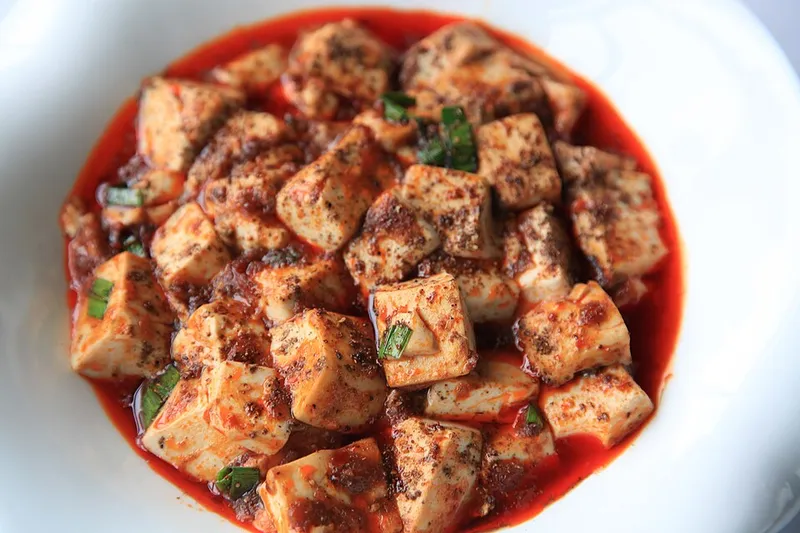
Mapo Tofu麻婆豆腐27 min分钟 · 2 servings份 · Sichuan川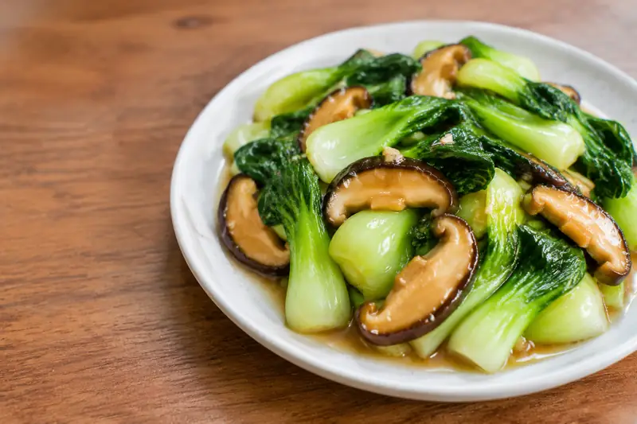
Bok Choy with Shiitake Mushrooms香菇扒油菜21 min分钟 · 3 servings份 · Jiangnan江浙Hunan Farmhouse Stir-fried Pork农家小炒肉25 min分钟 · 2 servings份 · Hunan湘 Lettuce with Oyster Sauce蚝油生菜10 min分钟 · 2 servings份 · Cantonese粤Black Pepper Beef Rice Bowl黑椒牛肉饭30 min分钟 · 2 servings份 · Chinese home-style家常
Lettuce with Oyster Sauce蚝油生菜10 min分钟 · 2 servings份 · Cantonese粤Black Pepper Beef Rice Bowl黑椒牛肉饭30 min分钟 · 2 servings份 · Chinese home-style家常 Scallion Lamb Stir-fry葱爆羊肉36 min分钟 · 2 servings份 · Chinese home-style家常
Scallion Lamb Stir-fry葱爆羊肉36 min分钟 · 2 servings份 · Chinese home-style家常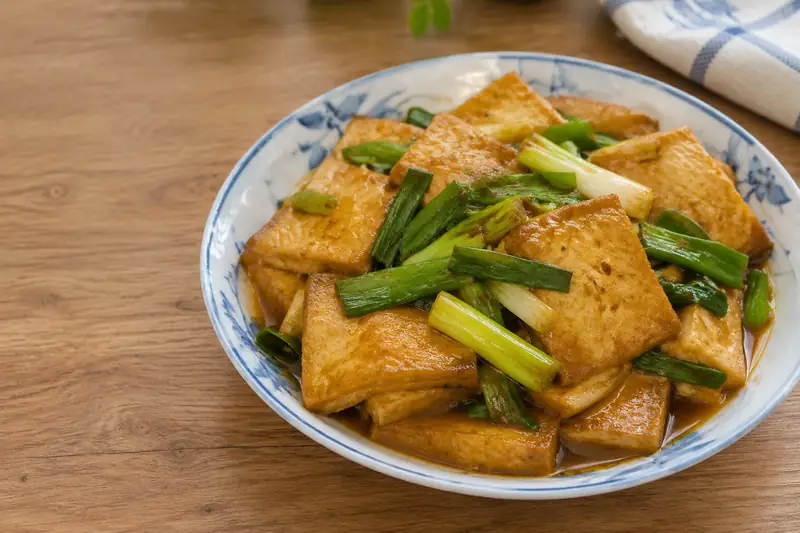
Braised Tofu with Green Onions葱烧豆腐20 min分钟 · 2 servings份 · Shandong鲁Shanghai Fried Noodles上海粗炒面27 min分钟 · 2 servings份 · Jiangnan江浙 Cantonese Shrimp and Silky Eggs滑蛋虾仁21 min分钟 · 2 servings份 · Cantonese粤
Cantonese Shrimp and Silky Eggs滑蛋虾仁21 min分钟 · 2 servings份 · Cantonese粤 Shrimp Wonton Soup鲜虾云吞汤40 min分钟 · 4 servings份 · Cantonese粤
Shrimp Wonton Soup鲜虾云吞汤40 min分钟 · 4 servings份 · Cantonese粤 Sichuan Boiled Fish in Chilli Oil水煮鱼片35 min分钟 · 3 servings份 · Sichuan川Sichuan Boiled Beef水煮牛肉38 min分钟 · 3 servings份 · Sichuan川
Sichuan Boiled Fish in Chilli Oil水煮鱼片35 min分钟 · 3 servings份 · Sichuan川Sichuan Boiled Beef水煮牛肉38 min分钟 · 3 servings份 · Sichuan川 Silky Steamed Eggs with Minced Pork肉末蒸水蛋25 min分钟 · 2 servings份 · Cantonese粤
Silky Steamed Eggs with Minced Pork肉末蒸水蛋25 min分钟 · 2 servings份 · Cantonese粤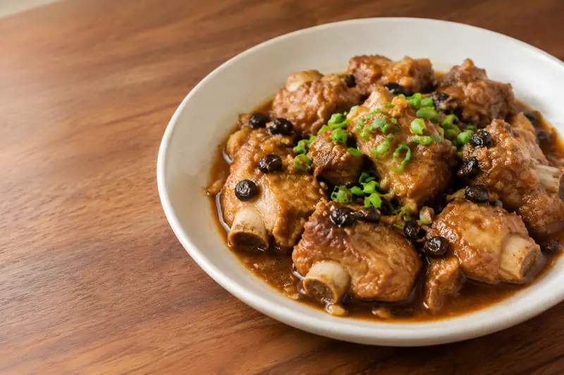
Steamed Pork Ribs in Black Bean Sauce豉汁蒸排骨60 min分钟 · 4 servings份 · Cantonese粤Pickled Cabbage Fish酸菜鱼38 min分钟 · 3 servings份 · Sichuan川Guizhou Sour Soup Fish酸汤鱼35 min分钟 · 3 servings份 · Yunnan / Guizhou云贵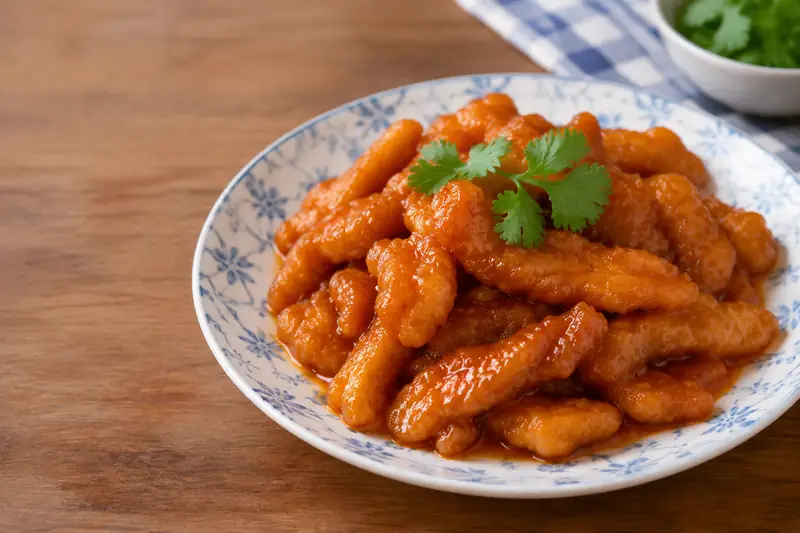
Sweet and Sour Pork Tenderloin (Tangcu Liji)糖醋里脊40 min分钟 · 3 servings份 · Shandong鲁Pork Mince Tofu Rice Bowl肉末豆腐盖饭37 min分钟 · 2 servings份 · Chinese home-style家常Tofu Skin Rolls腐皮卷45 min分钟 · 2 servings份 · Cantonese粤 Vinegar Stir-fried Napa Cabbage醋溜白菜13 min分钟 · 3 servings份 · Shandong鲁West Lake Vinegar Fish西湖醋鱼（家常版）27 min分钟 · 2 servings份 · Jiangnan江浙
Vinegar Stir-fried Napa Cabbage醋溜白菜13 min分钟 · 3 servings份 · Shandong鲁West Lake Vinegar Fish西湖醋鱼（家常版）27 min分钟 · 2 servings份 · Jiangnan江浙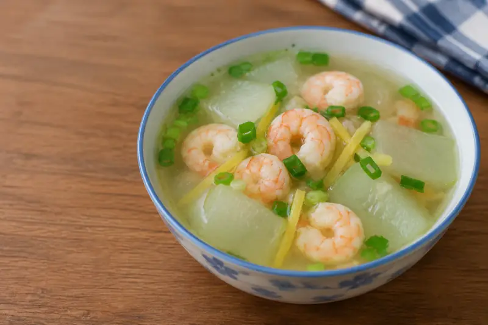
Winter Melon and Shrimp Soup冬瓜虾仁汤40 min分钟 · 4 servings份 · Chinese home-style家常Hunan Stir-fried Beef小炒黄牛肉20 min分钟 · 2 servings份 · Hunan湘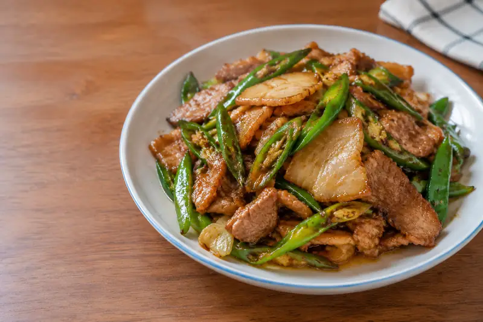
Hunan Stir-fried Pork with Green Chillies农家小炒肉18 min分钟 · 2 servings份 · Hunan湘 West Lake Beef Soup西湖牛肉羹25 min分钟 · 4 servings份 · Jiangnan江浙Crossing-the-Bridge Rice Noodles过桥米线（家常版）65 min分钟 · 2 servings份 · Yunnan / Guizhou云贵Fish-fragrant Eggplant鱼香茄子27 min分钟 · 3 servings份 · Sichuan川Yuxiang Shredded Pork鱼香肉丝38 min分钟 · 2 servings份 · Sichuan川
West Lake Beef Soup西湖牛肉羹25 min分钟 · 4 servings份 · Jiangnan江浙Crossing-the-Bridge Rice Noodles过桥米线（家常版）65 min分钟 · 2 servings份 · Yunnan / Guizhou云贵Fish-fragrant Eggplant鱼香茄子27 min分钟 · 3 servings份 · Sichuan川Yuxiang Shredded Pork鱼香肉丝38 min分钟 · 2 servings份 · Sichuan川